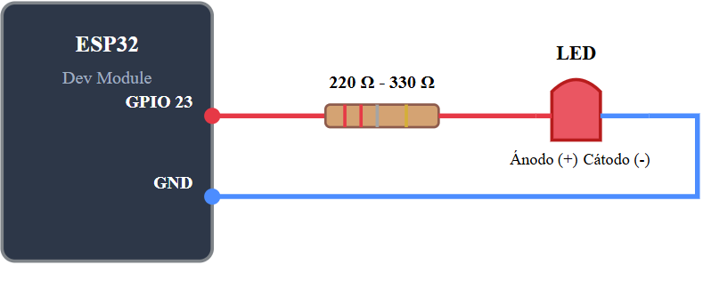
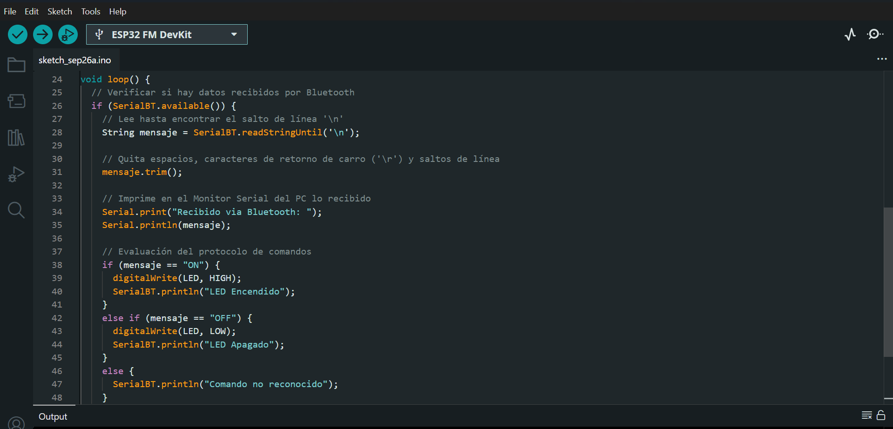
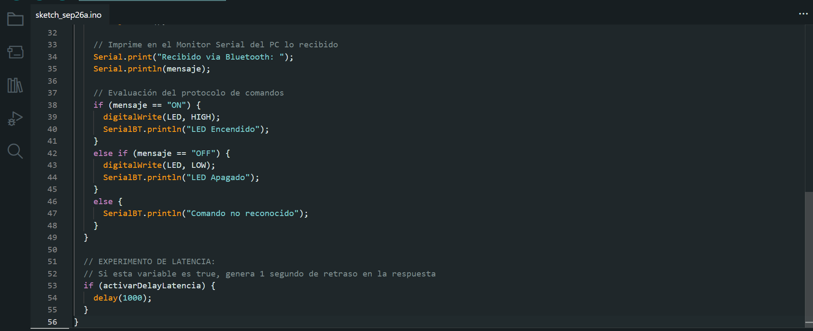
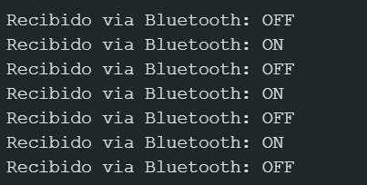
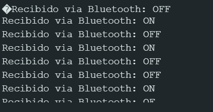

Reporte de Práctica: Comunicación Bluetooth con ESP32
1. Objetivos de la Práctica
- Enlace Bluetooth: Establecer una conexión serial inalámbrica mediante
BluetoothSerial.h, verificando el emparejamiento con el dispositivo móvil y la recepción de datos en el Monitor Serial. - Control de LED mediante Bluetooth: Implementar el control de encendido y apagado de un LED con los comandos
ONyOFFusando limpieza de cadenas (mensaje.trim()). - Protocolo de Comandos: Documentar la estructura y relación entre comando y acción recibida por el microcontrolador.
- Experimento de Latencia: Comparar el comportamiento del sistema de control con y sin retardos bloqueantes (
delay(1000)).
2. Diagrama de Conexión
A continuación se ilustra la conexión del circuito físico entre la tarjeta ESP32, la resistencia limitadora de corriente (220 Ω - 330 Ω) y el LED.

3. Código Implementado
El desarrollo del firmware en C++ para el ESP32 se estructuró en tres partes principales para facilitar su lectura y depuración:
Captura 1: Configuración inicial e inclusión de librerías

#include "BluetoothSerial.h"
BluetoothSerial SerialBT;
// Definición de pines (puedes usar el LED incorporado GPIO 2 o cambiarlo al pin que gustes)
#define LED 2
// Cambia a true si quieres probar el Experimento de Latencia (delay a propósito)
bool activarDelayLatencia = false;
void setup() {
Serial.begin(115200);
// Inicialización del Bluetooth con el nombre del dispositivo
SerialBT.begin("ESP32_Practica"); // Nombre visible en el celular
SerialBT.setTimeout(20); // Evita que readStringUntil bloquee el loop
pinMode(LED, OUTPUT);
digitalWrite(LED, LOW);
Serial.println("Servicio Bluetooth listo. Empareja tu celular con 'ESP32_Practica'.");
}
Captura 2: Recepción de comandos y limpieza de cadenas con trim()
void loop() {
// Verificar si hay datos recibidos por Bluetooth
if (SerialBT.available()) {
// Lee hasta encontrar el salto de línea '\n'
String mensaje = SerialBT.readStringUntil('\n');
// Quita espacios, caracteres de retorno de carro ('\r') y saltos de línea
mensaje.trim();
// Imprime en el Monitor Serial del PC lo recibido
Serial.print("Recibido via Bluetooth: ");
Serial.println(mensaje);
// Evaluación del protocolo de comandos
if (mensaje == "ON") {
digitalWrite(LED, HIGH);
SerialBT.println("LED Encendido");
}
else if (mensaje == "OFF") {
digitalWrite(LED, LOW);
SerialBT.println("LED Apagado");
}
else {
SerialBT.println("Comando no reconocido");
}
}
Captura 3: Estructura del experimento de latencia

// EXPERIMENTO DE LATENCIA:
// Si esta variable es true, genera 1 segundo de retraso en la respuesta
if (activarDelayLatencia) {
delay(1000);
}
}
4. Tabla del Protocolo de Comandos
| Comando Enviado | Acción Realizada | Respuesta por Bluetooth |
|---|---|---|
ON |
Enciende el LED | "LED Encendido" |
OFF |
Apaga el LED | "LED Apagado" |
| Cualquier otro | Ninguna | "Comando no reconocido" |
5. Demostración y Experimento de Latencia
Funcionamiento sin retraso (activarDelayLatencia = false)
En esta prueba, el bucle loop() se ejecuta sin interrupciones. El tiempo de respuesta entre el envío del comando desde el dispositivo móvil y la respuesta del LED es instantáneo.
Señal y datos recibidos:

Funcionamiento con latencia inducida (activarDelayLatencia = true)
Al introducir la función delay(1000), la ejecución del programa se bloquea durante 1 segundo por ciclo. Esto ocasiona que los comandos enviados se acumulen en el búfer serial, generando un retraso significativo entre la orden enviada y la reacción del LED.
Señal y datos recibidos:

6. Conclusión
- Importancia de
trim(): La limpieza de la cadena mediantemensaje.trim()resulta esencial. Sin este paso, caracteres invisibles de fin de línea como\ro\nimpiden que las comparaciones estricta (mensaje == "ON") sean afirmativas. - Impacto de funciones bloqueantes: La prueba de latencia demostró que el uso de
delay()degrada drásticamente la capacidad de respuesta en tiempo real del ESP32. Para aplicaciones de control crítico (como carritos a control remoto o sistemas de seguridad), el hilo principal de ejecución debe permanecer libre de bloqueos.